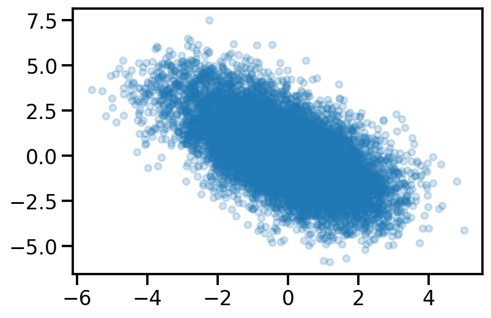
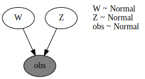

import numpy as np
import matplotlib.pyplot as plt
import torch
import seaborn as sns
import pandas as pd
dist =torch.distributions
sns.reset_defaults()
sns.set_context(context="talk", font_scale=1)
%matplotlib inline
%config InlineBackend.figure_format='retina'Basic Imports
Generative model for PPCA in PyTorch
data_dim = 2
latent_dim = 1
num_datapoints = 100
z = dist.Normal(
loc=torch.zeros([latent_dim, num_datapoints]),
scale=torch.ones([latent_dim, num_datapoints]),)
w = dist.Normal(
loc=torch.zeros([data_dim, latent_dim]),
scale=5.0 * torch.ones([data_dim, latent_dim]),
)w_sample= w.sample()
z_sample = z.sample()
x = dist.Normal(loc = w_sample@z_sample, scale=1)
x_sample = x.sample([100])
plt.scatter(x_sample[:, 0], x_sample[:, 1], alpha=0.2, s=30)<matplotlib.collections.PathCollection at 0x16051f1c0>
Generative model for PPCA in Pyro
import pyro.distributions as dist
import pyro.distributions.constraints as constraints
import pyro
pyro.clear_param_store()
def ppca_model(data, latent_dim):
N, data_dim = data.shape
W = pyro.sample(
"W",
dist.Normal(
loc=torch.zeros([latent_dim, data_dim]),
scale=5.0 * torch.ones([latent_dim, data_dim]),
),
)
Z = pyro.sample(
"Z",
dist.Normal(
loc=torch.zeros([N, latent_dim]),
scale=torch.ones([N, latent_dim]),
),
)
mean = Z @ W
return pyro.sample("obs", pyro.distributions.Normal(mean, 1.0), obs=data)
pyro.render_model(
ppca_model, model_args=(torch.randn(150, 2), 1), render_distributions=True
)
ppca_model(x_sample[0], 3).shapetorch.Size([2, 100])from pyro import poutine
with pyro.plate("samples", 10, dim=-3):
trace = poutine.trace(ppca_model).get_trace(x_sample[0], 1)trace.nodes['W']['value'].squeeze()torch.Size([10, 100])data_dim = 3
latent_dim = 2
W = pyro.sample(
"W",
dist.Normal(
loc=torch.zeros([latent_dim, data_dim]),
scale=5.0 * torch.ones([latent_dim, data_dim]),
),
)N = 150
Z = pyro.sample(
"Z",
dist.Normal(
loc=torch.zeros([N, latent_dim]),
scale=torch.ones([N, latent_dim]),
),
)Z.shape, W.shape(torch.Size([150, 2]), torch.Size([2, 3]))(Z@W).shapetorch.Size([150, 3])